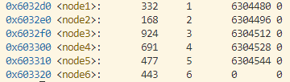
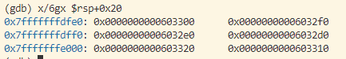

bomb lab
bomb lab总共有六个小部分，最后完成后程序会提示如下：
Phase 1 defused. How about the next one?
That's number 2. Keep going!
Halfway there!
So you got that one. Try this one.
Good work! On to the next...
Congratulations! You've defused the bomb!
每个实验的程序都会有所不同，但基本的逻辑都是不变的，本例中的各个小部分的答案如下：
Border relations with Canada have never been better.
1 2 4 8 16 32
3 256
7 0
ionefg
4 3 2 1 6 5
下面对解题前的准备和每一个phase的解答，进行说明
解题前的准备
汇编代码指令
| 名称 | 解释 | 作用 |
|---|---|---|
shr |
shift right右移 | shr $0x1f,%ecx |
lea |
加载地址 | 将对应的地址加载到寄存器中 |
cmpl |
比较两个操作数，设置标志寄存器，即第二个操作数减去第一个操作数 | 常用来与条件跳转指令一起使用（jne，je） |
ja |
jump if above 大于时跳转 | 与判断指令进行配合，决定是否跳转 |
jge |
||
jne |
jump if not equal 如果不相等则跳转，相等时则执行后面的指令 | 与判断指令进行配合，决定是否跳转 |
jbe |
第一个数小于等于第二数进行跳转 | |
jmp |
无条件跳转命令，程序直接跳转到指定的标签，无需判断条件 | 常用于循环、条件或函数调用的实现 |
jg |
jump if greater 如果大于则跳转 | 条件跳转 |
cltq |
符号扩展，将eax扩展为rax |
|
test |
取and与操作，判断`eax是否为零，即函数的返回值是否为0 | test %eax, %eax ; 检查 eax 是否为零 jz label ; 如果 eax为零，跳转到 label |
gdb调试命令
| 名称 | 名称 | 作用 | 举例 |
|---|---|---|---|
| b | break | 指定位置设置断点 | b *(phase_1+15) |
| si | stepi | 执行当前指令，如果是函数调用，则进入函数 | si |
| c | cont | 从当前位置执行程序，直到下一个断点或程序结束 | c |
| p | 打印变量的值 | p/s $rax |
|
| x | 打印内存中的值 | x/s 0x402400 |
|
| finish | 让程序继续执行，直至当前函数返回为止，返回到函数调用点 | finish |
|
layout asm |
显示当前程序执行的汇指令 | layout asm |
|
layout regs |
显示程序当前的寄存器存储的值 | layout regs |
其他常用指令
objdump -d bomb > bomb.asm
该命令将bomb可执行文件进行反汇编，并保存到bomb.asm文件中，便于查看
gdb bomb
layout asm
layout regs
在命令行中输入这些指令，开始运行程序
安全化炸弹
gdb中有一个很实用的功能，可以使用.gdbinit文件进行默认的gdb配置，免去反复使用一些指令。
在命令行中输入以下命令：
# 创建当前目录下的 .gdbinit 文件
touch .gdbinit
# 创建 .config/gdb 文件夹
mkdir -p ~/.config/gdb
# 允许 gdb 预加载根目录下所有的文件
echo "set auto-load safe-path /" > ~/.config/gdb/gdbinit
打开.gdbinit文件，输入以下内容。其中注意，不同的电脑，反汇编程序顺序不同，因此设置断点时，需要根据反汇编程序文件，进行设置，主要是有相加指令的部分
# ./gdbinit
# 设置默认文件输入，这样我们不必每次手动输入答案
set args psol.txt
# 可以为 explode_bomb 函数设置断点，这样我们就可以在爆炸之前打断程序的执行
# 但是由于其会打印输出信息，所以后面有更具有针对性的设置，跳过信息发送函数
# 所以这里就不再设置断点了
# b explode_bomb
# 为各个 phase 函数设置断点，用以观察其执行过程
# 如果你做完了某个 phase，可以将其注释掉，这样就不会再进入该 phase 了
b phase_1
# b phase_2
# b phase_3
# b phase_4
# b phase_5
# b phase_6
# 为校验函数设置断点
b phase_defused # 此处地址为 0x4015c4
# 为此断点编程
command
# 直接跳到返回语句处，跳过校验流程
jump *(phase_defused + 0x94) #ret命令的地址为 0x401658
end
# 以下代码务必保留!!!
# 为 explode_bomb 中触发 send_msg 函数的地方设置断点
# b *(explode_bomb + 0x44)
b *(explode_bomb)
# 为此断点编程
command
# 直接跳到 exit 退出函数处，跳过发送信息流程
j *(explode_bomb + 0x1d)
end
# 炸弹已经安全化，可以放心地拆弹了，开始运行程序
r
phase_1
这一题比较简单，程序的主要逻辑如下所示：
- 判断输入的字符串与程序内设定的字符串是否相等
解决方法：
- 在
call <strings not equal>语句后设置断点 - 利用gdb显示出寄存器
rsi的内容
命令行代码如下：
b *(phase_1+9)
c
x/s $rsi
输出结果为：
Border relations with Canada have never been better.
将该句话，保存在psol.txt文件的第一行中即可。
再次运行程序：
gdb bomb
c
程序返回：
Phase 1 defused. How about the next one?
此时，phase_1顺利结束。
phase_2
程序的主要逻辑为
- 函数的输入为6个数字
- 程序的第一个输入为1
- 后面的每一个数字都是前一个数的两倍
因此，该题的解题答案为：
1 2 4 8 16 32
将上面的数字粘贴到psol.txt的第二行，再次运行程序
gdb bomb
c
程序输出结果为：
That's number 2. Keep going!
此时，第二题顺利结束
phase_3
程序的主要逻辑为
- 函数格式化读取某些参数，即
sscanf函数，可通过寄存器的值查看输入参数的要求 - 要求第一个参数，需要小于7
- 根据输入的参数，会跳转到不同的命令语句，复制不同的立即数到寄存器
- 要求输入的第二个数值和寄存器中的数值相等
解题思路：
- 第一个参数的输入，会影响第二个参数的值
- 首先令第一个参数的值小于7
- 在最后的比较是否相等的命令中，设置断点，查看需要比较的值
程序解答效果：
首先我们需要给定一个假设的值，假如设置初始值为3 256
# 设置断点
b *(phase_3+19)
x/s $rsi
程序的运行结果为：
0x4025cf: "%d %d"
说明输入的为两个整数参数，继续运行程序
#设置断点
b *(phase_3+123)
p $rax
得到程序的输出结果为
256
因此，得到本题的答案为3 256。当然根据输入的第一个值不同，也可以会有其他的答案，比如尝试过1 311也是可以的。将结果添加到psol.txt文件中，运行程序效果如下：
gdb bomb
c
得到运行结果如下：
Halfway there!
至此，phase_3已经顺利结束！
phase_4
程序的主要逻辑为：
- 格式化读取参数，通过输出编译器的值可以知道需要输入的参数类型
- 第一个参数有一个判断，需要小于等于
0xe，即输入数小于等于14 - 之后是调用了一个函数，func4，所以需要弄清楚func4的逻辑，同时需要满足函数结束时，
eax返回值为0 - 比较第二个参数是否为0
- func4的逻辑说明如下
- 函数内有两个跳转命令，一个
jle和一个jge，而且两次比较的内容都是edi和ecx的大小，即第一个跳转要求ecx小于等于edi，第二个跳转要求ecx大于等于edi，因此唯一的解决方案是两个都相等又由于edi的值不发生变化为输入的第一个参数，ecx的值为14，经过右移后，变为7，因此为了保证eax为0，即第一次循环就跳出，可得edi为7，即输入的第一个参数为7
因此得到该题的结果为7 0，将结果放入psol.txt文件中，运行程序的效果如下：
gdb bomb
c
程序输出的结果如下：
So you got that one. Try this one.
到这里，phase_4顺利完成！
phase_5
程序逻辑说明：
- 首先判断输入的参数值为，字符长度为6的字符串
- 通过最后的比较相等的指令，可以得到最终需要凑出的字符串，即最终得到的字符串为
"flyers" - 到中间的函数处理的步骤，了解到是通过字符串的值，对应到指定字符某一个位置的字母，即输入的为b，二进制为0110 0010, 则处理过程中，将前四位去掉，得到0010，即指定字符串
"maduiersnfotvbylso you think you can stop the bomb with ctrl-c, do you?"中的第三个字母，即d,根据以上方法，得到剩余的字符串 - 将前四位去掉的原因，是其中有一个
and指令，抹去前四位 - f 为第10位，减去1后，因为计算从零开始计数，则为0x1001，则为i
- l为第16为，减去1后，则为0x1111，则为o
- y为第15位，减去1后，则为0x1110，则为n
- e为第6位，减去1后，则为0x0101，则为e
- r 为第7位，减去1后，则为0x0110，则为f
- s 为第8位，减去1后，则为0x0100，则为g
- 所以结果为
ionefg
程序运行结果说明：
b *(phase_5+62)
c
x/s $edx
程序输出为
"maduiersnfotvbylso you think you can stop the bomb with ctrl-c, do you?"
这是我们需要从这段话中，选出需要挑选的字母，与flyers对应，如f为第10位，就需要0x1001，即i
b *(phase_5+81)
c
x/s $rsi
此时程序输出的结果为：
"flyers"
这个时我们最终需要比对的字符，通过上面的分析，可以得到该题目的结果位ionefg ,添加到psol.txt文件中，运行程序的效果如下：
Good work! On to the next...
phase_6
第6个题目稍微有点长，基本逻辑说明如下：
- 函数初始化和栈空间分配
- 读取用户输入的6个数字，并验证，需要满足6个数字都在0和6之间
- 验证是否重复，需保证所有的输入数字不能重复
- 创建初始链表，包括节点值和下一个指针
- 根据输入的顺序调整链表中节点的顺序，即如果是3 1 2的话，表示将原始链表中的第三个节点放在开头的位置，接下来node1，node2。其中需要注意，在处理的过程中，每个数均与7进行相减，即7-输入数的值为最终的调整链表的顺序数字
- 验证调整后的链表中的数据是否按照降序排列
程序运行如下：
首先查看创建的原始链表中各个节点的信息
b *(phase_6+143)
c
x/24 $rdx

可以得出，如果需要将最终的节点按照降序排列，则需要调整的顺序为3 4 5 6 1 2，，注意与7的运算，因此本题的结果为4 3 2 1 6 5，输入到psol.txt文件中，可以得到最后调整后的节点信息，如下所示
b *(phase_6+183)
c
x/6gx $rsp+0x20

满足从大到小的降序排列要求，因此本题目的结果为4 3 2 1 6 5，运行程序效果如下：
Congratulations! You've defused the bomb!
恭喜！已经完成bomb lab的全部部分！
参考资料
Arthals在北大计算机系统导论（ICS）课程中所做的详尽笔记：Bomb Lab